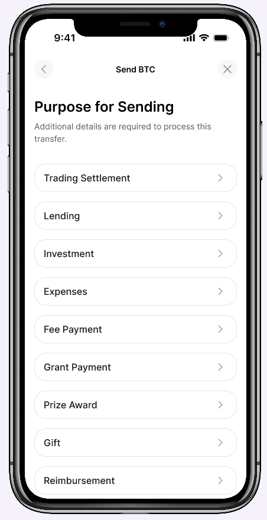
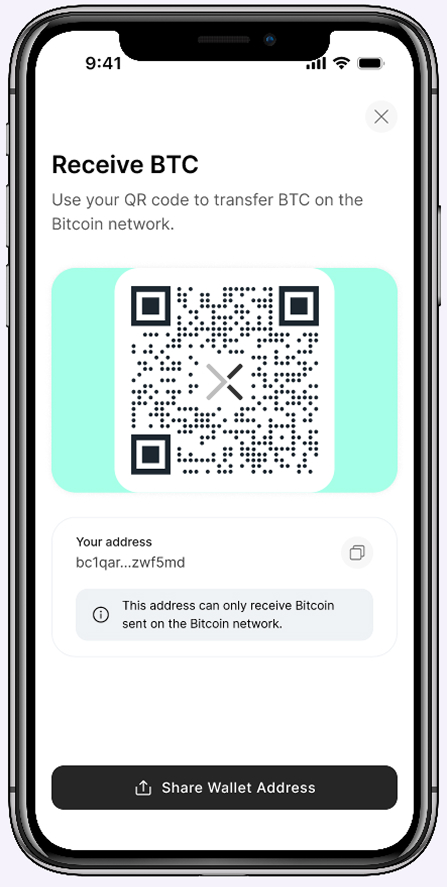
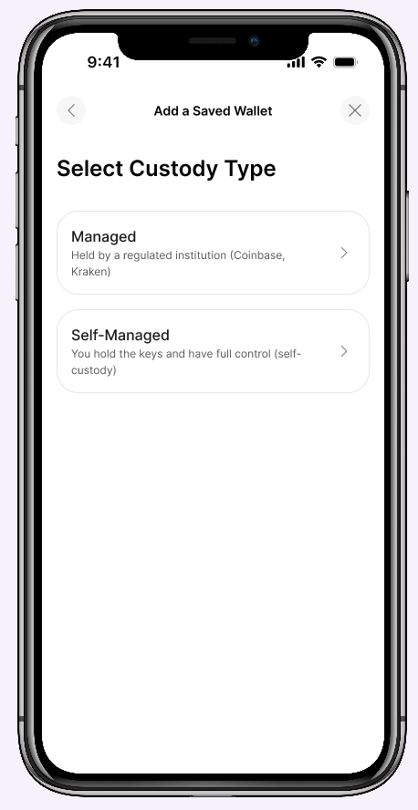
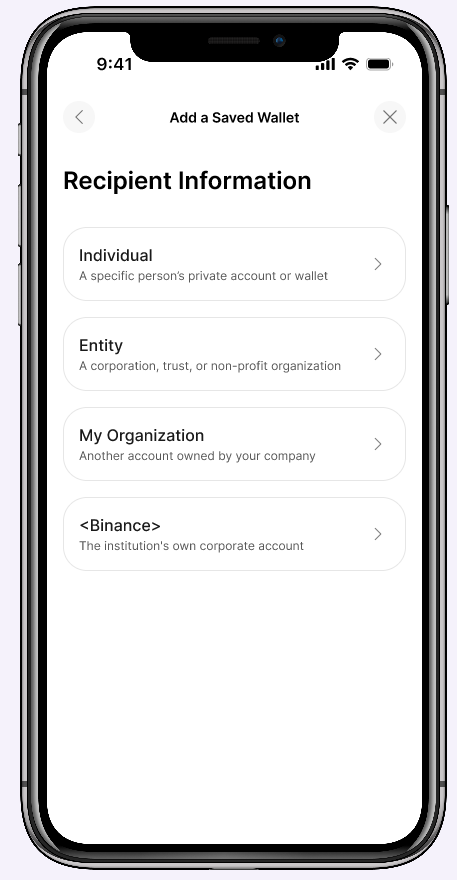

Designing Send & Receive for self-directed crypto.
Building the first crypto money-movement flows inside a regulated bank, where every screen had to answer to a custodian's API before it could answer to the user.


The first time a regulated bank let customers move crypto on their own.
Axos Bank's self-directed crypto product launched trading and custody, but customers had no way to move Bitcoin in or out of their accounts. I designed the Send and Receive flows from scratch, the first time Axos let customers transact directly with external wallets. Development is underway now, targeting launch in the coming months.
The real challenge wasn't the UI. Our custodial vendor holds assets in omnibus custody, so unlike Coinbase or Kraken, it can't credit a deposit the instant it confirms on-chain. Every transaction needs extra instruction, compliance checks, or manual review.
My job was to absorb that complexity so customers didn't feel all of it at once, while keeping compliance, risk, and engineering confident in the result.
Designing inside someone else's rulebook.
- No internal precedent. Every pattern, from saved wallets to limit displays, had to be designed from scratch.
- The vendor's API enforces its own compliance logic (Travel Rule data, sanctions screening, wallet whitelisting) that the UI has to surface, not hide.
- Customers compare us to Coinbase and Kraken, which carry none of these constraints. The flows needed to feel modern, not bureaucratic.
- Three transfer contexts (external wallets, other Axos customers, linked accounts) carry different risk and needed different friction levels.
Treating compliance as a design constraint, not a disclaimer.
Sending BTC out of a custodial account touches anti-money-laundering rules, sanctions screening, and transaction-purpose reporting. I treated each of those as a design constraint, not a disclaimer to bury in fine print.


Recipient entry and address validation.
The recipient screen doubles as a saved-wallet manager, since repeat sends to the same address are the common case. Address validation runs as a real round trip to the vendor, not a client-side check, because the backend screens each address against sanctions and VASP data. I built a loading state for that check and separate error states for invalid format versus a flagged address, so customers get an honest signal instead of a generic failure.
Saved wallets carry a Pending badge because the vendor requires signed email authorization before an address becomes sendable, closer to institutional whitelisting than anything a retail exchange does. I surfaced that wait as a visible status customers can return to, rather than hiding it behind a spinner.
Purpose for sending.
No mainstream exchange asks customers to declare why they're sending Bitcoin. Axos's vendor needs a purpose code for regulatory reporting before it accepts the instruction. I designed this as its own step, with categories worded the way a customer would actually describe an action (Gift, Reimbursement, Rebalance) instead of compliance taxonomy, so it reads as routine rather than an interrogation.
Amount, limits, and account selection.
Limits are enforced per source account, not per customer, so the active account's remaining balance had to be unmistakable. I designed the Send Limits module as a persistent progress bar rather than a static number, and reused it in a hard-stop screen for transfers that would exceed the limit, teaching the constraint early instead of surprising the customer at submission.
Verification and confirmation.
SMS verification only appears on one path: internal transfers to another Axos customer above a set amount. That's a deliberate risk call with fraud and compliance, since third-party transfers are the pattern most associated with social-engineering scams.
The confirmation copy avoids promising what the backend can't deliver. The vendor queues outbound transactions before broadcasting them, so there's no transaction hash the moment a customer hits submit, unlike Coinbase or Kraken. I wrote the success state around what's actually true: the request is initiated, and the customer will be notified by email once it's complete. That's a smaller promise, but it's one the product can keep.
Same constraint, opposite direction.
Receiving has the same underlying constraint as sending, the vendor's omnibus custody model, but it shows up in reverse: instead of validating who you're sending to, the system needs the customer to actively claim funds that already arrived.
Sharing the deposit address.
Most platforms cache a permanent deposit address, so the QR code is always there. Our vendor generates it on demand through an API call, which means a real failure mode if that endpoint is slow. I designed an explicit QR Code Not Available state with a path to retry, rather than letting the screen fail silently.
The network-exclusivity notice under the address (Bitcoin network only) does real work too. The vendor doesn't auto-detect a deposit sent on the wrong network, so that warning has to do the job a routing layer would otherwise handle. This is the one mistake on this screen that can't be undone, so it sits directly under the address rather than in a tooltip.
Manual approval for external deposits.
Coinbase and Kraken credit inbound Bitcoin automatically once it confirms on-chain. Because Axos's vendor holds funds in omnibus custody rather than a dedicated wallet per customer, it needs explicit customer direction before crediting an account, which meant designing an active approval step into a moment that's normally passive in crypto.
The deposit-received state opens with a celebratory visual before asking the customer to act, so the first thing they feel is that money arrived. The Verify Deposit Information step, which collects sender country and custody type, is a Travel Rule requirement (FATF/FinCEN) that most platforms collect passively. I scoped the fields down to exactly what's required and pre-filled the obvious case, a checkbox for "this is from my own wallet," so it reads as a quick confirmation rather than a form.
Even after approval, funds don't land instantly, since the vendor's crediting workflow includes a backend review queue. I wrote that state honestly ("we're reviewing your submission") instead of implying the deposit is final. The internal Axos-to-Axos deposit sits right next to this flow on purpose: it carries none of the Travel Rule obligation, so it resolves in one auto-approved screen, the experience customers expect everywhere else.
Cost basis as a deliberate, separate ask.
The cost-basis prompt after both deposit flows isn't vendor-mandated. It's a platform decision: most competitors ignore cost basis entirely or defer it to tax season, which becomes a support burden later. I surface it immediately, but as a deferred, non-blocking note rather than a required field, so it doesn't compete with the more time-sensitive compliance steps above it.
Engineering is currently building against these flows, with launch targeted in the next few months. Because this was net-new for the bank, a meaningful part of the work was procedural: getting compliance, risk, and the vendor's integration team aligned on which constraints were truly non-negotiable (sanctions screening, Travel Rule data, wallet whitelisting) versus which were defaults I could soften in the UI.
The throughline is the same across both flows: where the backend genuinely can't move at exchange speed, the design says so plainly and gives the customer a clear next step. Where the constraint was a default rather than a requirement, I designed around it instead of passing it through.